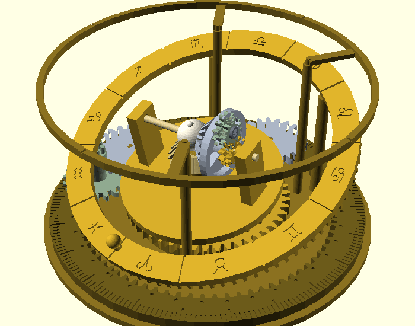
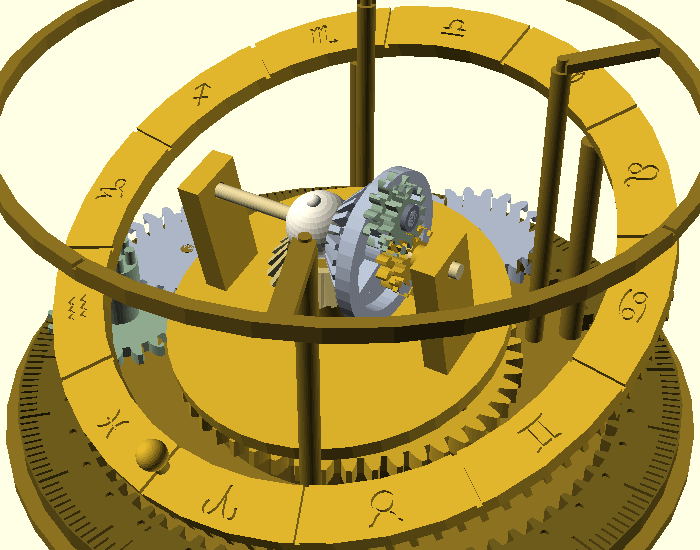

2000年前の天文計算機の子孫に、月の秤動・サロス周期・傾く天球、そして
18.6年の交点歳差 (誤差+0.10%) を仕込みました。すべて歯数の整数比から。

全体観覧 — リング1回転 = 1朔望月。月がうなずき、サロスが食を数え、太陽玉が黄道を巡る

歳差デモ — 傾いた心臓の回転軸そのものが円錐を描く (実機は地下輪列 1/684.66 が自動で駆動)
動力の川・側面模式図・考証表・Q&A。GIF埋め込みの読み物 (7.9MB)
Stage 0〜4 の積み上げ手順。哲学は「各段で必ず動く」
34部品・樹脂165cc・14プレート・約16時間の段取り (実測データから)
噛合15+接触25=40関係の全数監査。「ぶつからない」と「ちゃんと触れている」は別の検査